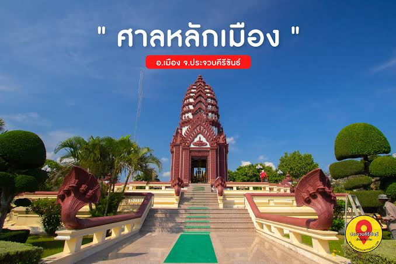
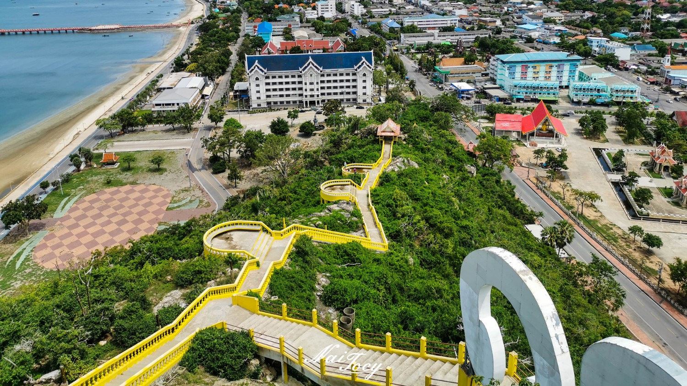

แผนเที่ยวหนึ่งวัน
1. ช่วงเช้า: เดินตลาด และสักการะศาลหลักเมืองประจวบคีรีขันธ์

เริ่มต้นเช้าวันใหม่ด้วยการเดินเล่นตลาดเช้าและแวะสักการะศาลหลักเมืองประจวบคีรีขันธ์เพื่อความเป็นสิริมงคล โดยมีรายละเอียดสำคัญดังนี้:
- ที่ตั้ง: ถนนสละชีพ ตำบลประจวบคีรีขันธ์ อำเภอเมืองประจวบคีรีขันธ์ (ตรงข้ามศาลากลางจังหวัดประจวบคีรีขันธ์ และใกล้กับเขาช่องกระจก)
- เวลาทำการ: เปิดทุกวัน ตั้งแต่เวลา 08:00 - 19:00 น.
- สถาปัตยกรรม: เป็นอาคารทรงจตุรมุขยอดปรางค์ 9 ชั้น งดงามด้วยศิลปะแบบลพบุรีผสมผสานศิลปะไทย
- องค์หลักเมือง (นาม "จตุโชค"): ทำจากไม้ตะเคียนที่ได้มาจากอำเภอกุยบุรี ส่วนยอดแกะสลักเป็นศิลปะศรีวิชัย 4 เศียร 4 พักตร์ ลงรักปิดทองและประดับอัญมณี มีขนาดความสูง 2.74 เมตร เส้นผ่านศูนย์กลาง 0.37 เมตร
- ประวัติการสร้าง: วางศิลาฤกษ์เมื่อวันที่ 4 มีนาคม พ.ศ. 2536 โดยร้อยตำรวจเอก อำนวย ไทยานนท์ ผู้ว่าราชการจังหวัด และสมเด็จพระบรมโอรสาธิราชฯ สยามมกุฎราชกุมาร (พระอิสริยยศในขณะนั้น) เสด็จฯ ทรงประกอบพิธีเปิดเมื่อวันที่ 20 สิงหาคม พ.ศ. 2537
2. ช่วงกลางวัน: รับประทานอาหารพื้นถิ่นริมอ่าวประจวบ
พักเติมพลังมื้อกลางวันกับอาหารทะเลสดใหม่จากเรือประมงพื้นบ้าน และอาหารพื้นถิ่นรสเด็ดริมชายหาดอ่าวประจวบ บรรยากาศลมพัดเย็นสบาย มองเห็นวิวทะเลและสะพานสราญวิถี
- เมนูแนะนำ: ปูม้านึ่งเนื้อหวาน กุ้งเผา หมึกแดดเดียวทอดกระเทียม ต้มยำทะเลน้ำใส และขนมจีนน้ำยาปู
- พิกัดร้านแนะนำ: ร้านอาหารทะเลเรียงรายตลอดแนวถนนเลียบชายหาดอ่าวประจวบ (ห่างจากศาลหลักเมืองเพียง 500 เมตร)
- เวลาแนะนำ: 11:30 - 13:30 น.
3. ช่วงบ่าย: ไปจุดชมวิวเขาช่องกระจก

เขาช่องกระจก เป็นสถานที่ท่องเที่ยวสำคัญและเป็นสัญลักษณ์ของเมืองประจวบคีรีขันธ์ ตั้งอยู่บริเวณด้านหลังศาลากลางจังหวัด ในเขตเทศบาลเมืองประจวบคีรีขันธ์
- ลักษณะภูมิประเทศ: เป็นภูเขาขนาดย่อม สูงประมาณ 245 เมตรจากระดับน้ำทะเล (หรือประมาณ 94 เมตรจากพื้นราบใกล้ชายฝั่ง)
- ที่มาของชื่อ: บริเวณด้านทิศเหนือของภูเขามีช่องทะลุโปร่ง มองดูคล้ายกับกรอบของกระจก
- การเดินทางขึ้นไปด้านบน: ต้องเดินขึ้นบันไดคอนกรีตจำนวน 396 ขั้น
- เวลาเปิดทำการ: เปิดให้เข้าชมทุกวัน เวลา 05:00 - 20:00 น.
- สิ่งที่น่าสนใจบนเขาช่องกระจก:
- วัดธรรมิการามวรวิหาร: ตั้งอยู่บริเวณเขาช่องกระจก เป็นที่ประดิษฐานรอยพระพุทธบาทจำลองและพระบรมสารีริกธาตุ
- ต้นพระศรีมหาโพธิ์: พระบาทสมเด็จพระบรมชนกาธิเบศร มหาภูมิพลอดุลยเดชมหาราช บรมนาถบพิตร ได้เสด็จฯ มาทรงประกอบพิธีบรรจุพระบรมสารีริกธาตุและทรงปลูกไว้เมื่อวันที่ 12 มิถุนายน 2501
- จุดชมวิว 360 องศา: สามารถมองเห็นทัศนียภาพของตัวเมืองประจวบคีรีขันธ์ และเห็นโค้งอ่าวสำคัญทั้ง 3 อ่าว คือ อ่าวประจวบ อ่าวมะนาว และอ่าวน้อย
- ถ้ำเหวาสถิตย์ & จุดชมพระอาทิตย์ขึ้น: เป็นจุดชมแสงแรกและพระอาทิตย์ขึ้นยามเช้าที่สวยงาม